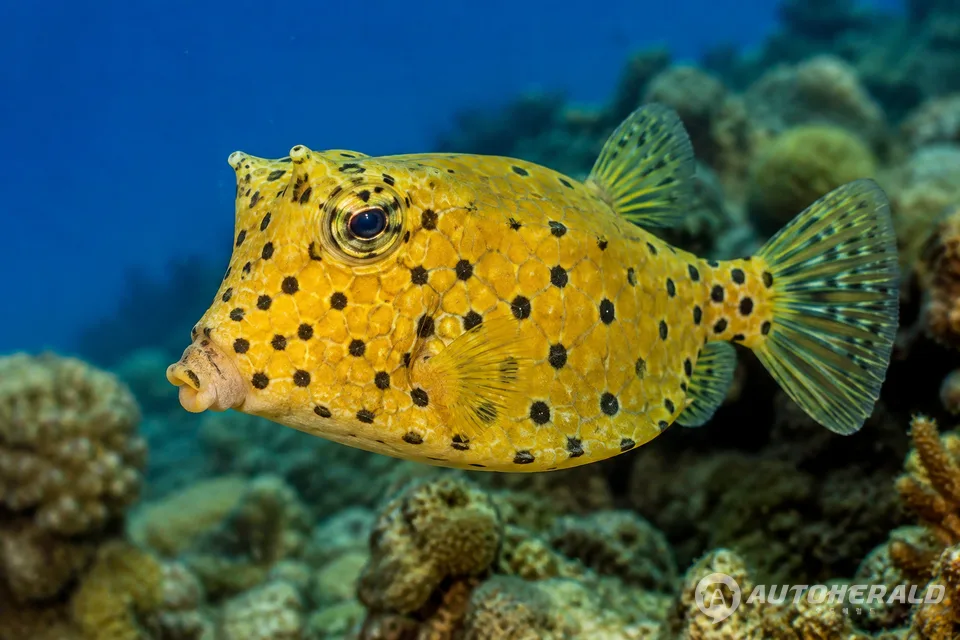
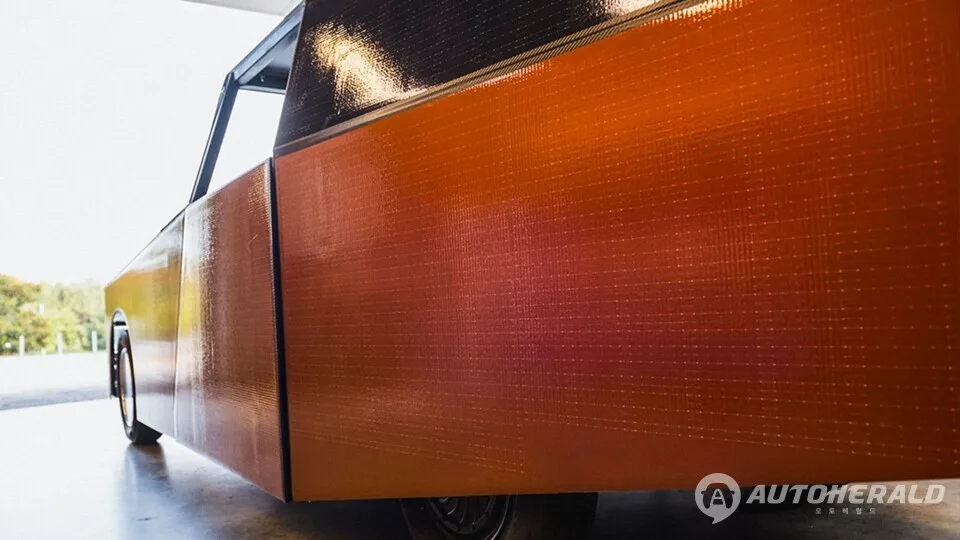
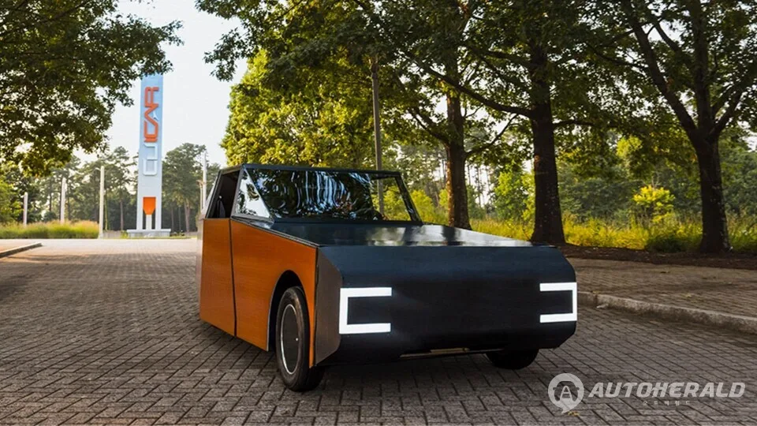

▲ BMW와 클렘슨대학교가 공동 개발한 태양광 연구 프로토타입 '딥 오렌지 17'
BMW 연구개발팀과 미국 클렘슨대학교가 손잡고 만든 태양광 연구 프로토타입 '딥 오렌지 17'이 공개됐습니다. 2024년 가을 시작된 이 프로젝트에는 자동차공학 대학원생 16명이 참여했으며, 독일 프라운호퍼 태양에너지시스템연구소(Fraunhofer ISE)도 기술 협력으로 힘을 보탰습니다. 결과물은 양산을 염두에 둔 콘셉트카가 아니라, "태양광이 자동차의 실질적인 동력원이 될 수 있는가"라는 질문에 답하기 위한 순수 연구용 프로토타입입니다.
1. 왜 하필 복어 모양인가 — 효율을 위한 선택
딥 오렌지 17의 뭉툭하고 낯선 외관은 우연이 아닙니다. 개발팀은 박스피시(거북복)의 몸통 구조에서 영감을 얻었습니다. 이 물고기는 뭉툭해 보이는 외형과 달리, 물속에서 와류를 최소화하는 뛰어난 유체역학적 효율을 갖고 있는 것으로 알려져 있습니다. 벤츠가 과거 '바이오닉 카' 콘셉트에서 같은 물고기를 참고했을 정도로, 자동차 공기역학 연구에서 반복적으로 소환되는 레퍼런스입니다. 딥 오렌지 17은 이 형태를 차체 전체에 적용해, 태양광 패널이 필요로 하는 넓은 표면적과 낮은 공기저항이라는 상충하는 두 목표를 동시에 만족시키려 했습니다.

▲ 딥 오렌지 17의 디자인 모티브가 된 박스피시(거북복). 뭉툭한 외형과 달리 우수한 유체역학적 효율을 가진 것으로 알려져 있다
2. 1,700개 태양광 셀, 그리고 550kg의 가벼움
차체 전면에 걸쳐 통합된 약 1,700개의 태양광 셀이 이 프로토타입의 핵심입니다. 여기에 강철, 알루미늄, 탄소섬유와 3D 프린팅 금속 접합부를 조합해 차체 무게를 550kg까지 끌어내렸는데, 이는 일반적인 승용차의 약 4분의 1에 불과한 수준입니다. 태양광 발전량 자체는 제한적일 수밖에 없는 만큼, 차체를 가볍게 만들어 같은 에너지로도 더 멀리 갈 수 있도록 설계 초점을 맞춘 것입니다. 태양광차 연구가 오랫동안 벽에 부딪혀온 지점이 바로 이 '에너지 대비 무게' 문제였다는 점에서, 딥 오렌지 17의 접근은 발전 효율이 아닌 소비 효율에서 답을 찾은 셈입니다.
| 항목 | 내용 |
|---|---|
| 태양광 셀 개수 | 약 1,700개 |
| 차체 무게 | 550kg |
| 주요 소재 | 강철·알루미늄·탄소섬유·3D 프린팅 금속 |
| 참여 인원 | 대학원생 16명(클렘슨대) |
| 기술 협력 | BMW, 프라운호퍼 ISE |
| 실증 주행거리 | 태양광만으로 하루 최대 약 50km 추가 |

▲ 차체 표면에 촘촘히 배치된 태양광 셀. 넓은 발전 면적을 확보하면서도 공기저항을 낮추는 형태로 설계됐다
3. 하루 50km — 숫자가 말해주는 것
가장 주목할 대목은 시뮬레이션 결과입니다. 하루 20km를 주행한 뒤 남은 태양광 에너지만으로 평균 약 50km의 추가 주행거리를 확보할 수 있다는 결과가 나왔습니다. 이는 단순 통근이나 근거리 이동이 잦은 사용자라면, 이론적으로 별도의 충전 없이도 상당 기간 태양광만으로 운행이 가능하다는 의미입니다. 물론 이는 특정 조건에서의 실증치일 뿐 상용화된 수치는 아니지만, "태양광 자동차는 발전 효율이 아니라 에너지 소비 효율의 문제"라는 것을 구체적인 숫자로 입증했다는 점에서 의미가 있습니다.

▲ 딥 오렌지 17의 후면. 태양광 패널 시스템이 차체 후반부까지 이어진다
4. 17년째 이어지는 산학협력 프로그램
'딥 오렌지'는 클렘슨대학교 자동차공학과가 매년 새로운 차량 프로토타입을 결과물로 내놓는 정규 산학협력 프로그램입니다. 대학원생들은 2년에 걸쳐 콘셉트 설계부터 검증까지 완성차 개발 전 과정을 실제 산업 파트너와 함께 경험합니다. 특히 BMW는 2007년 클렘슨대학교 국제자동차연구센터(CU-ICAR) 설립 당시부터 참여해온 창립 파트너로, 세계 최초의 자동차공학 박사 과정 개설에도 함께한 인연이 있습니다. 이번 딥 오렌지 17은 그 협력 관계가 17년째 이어지고 있다는 것을 보여주는 상징적인 프로젝트이기도 합니다.
5. 정리 — 양산과는 별개, 그러나 의미 있는 이정표
딥 오렌지 17은 BMW가 곧바로 양산할 차는 아닙니다. 클렘슨대학교의 자동차공학 대학원 프로그램이 산업 파트너와 함께 진행해온 연구 시리즈의 열일곱 번째 결과물일 뿐입니다. 하지만 완성차 업체가 대학과의 협업을 통해 태양광 동력이라는 오래된 난제에 구체적인 데이터를 제시했다는 점은 주목할 만합니다. 당장 도로 위에서 만날 수는 없어도, 이런 연구가 쌓여 미래 전기차의 보조 충전 기술이나 경량화 설계에 실제로 반영될 가능성은 충분합니다.